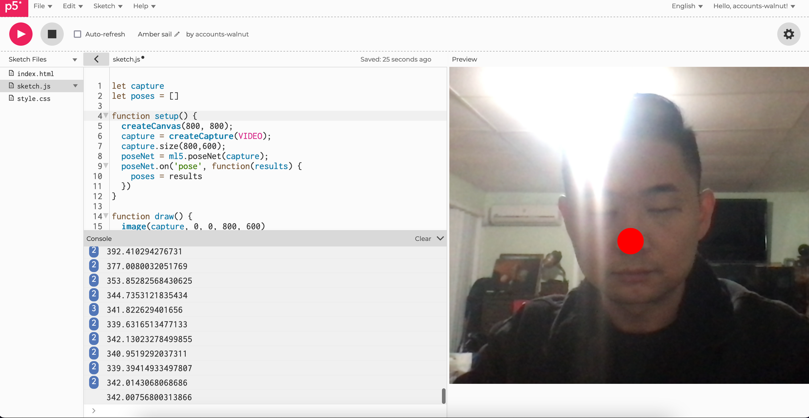
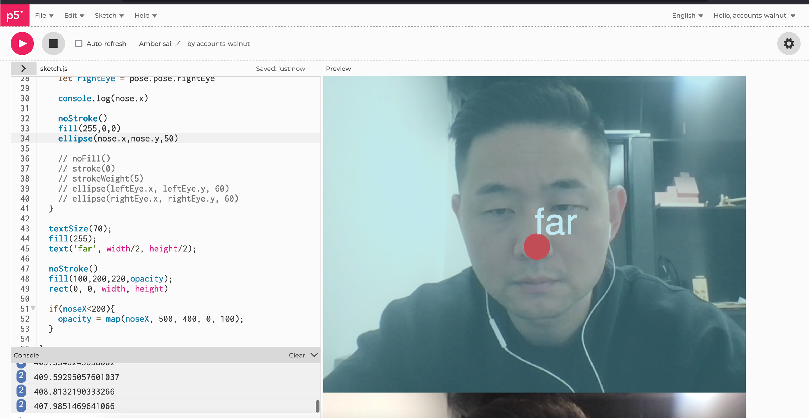
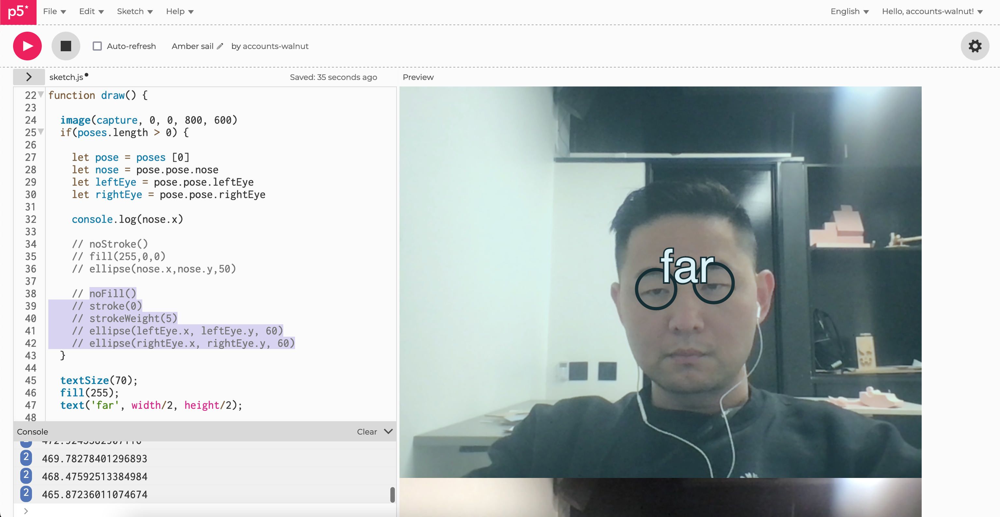
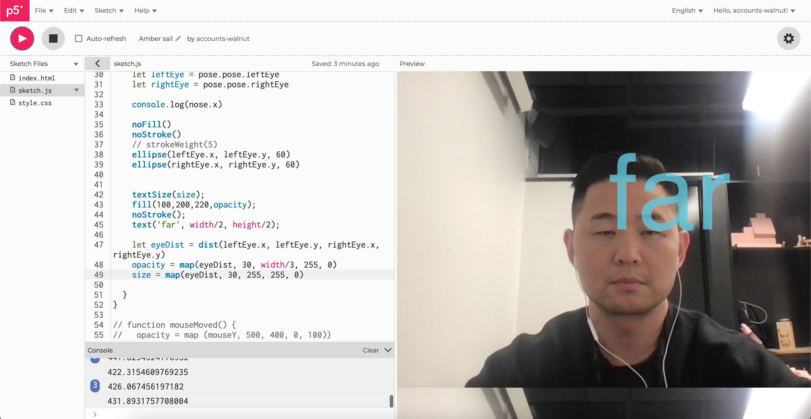
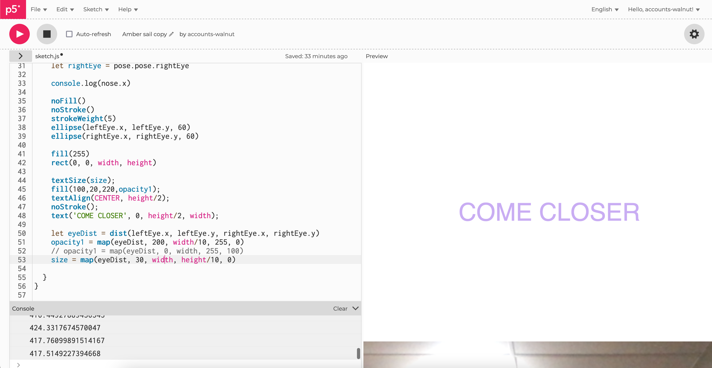
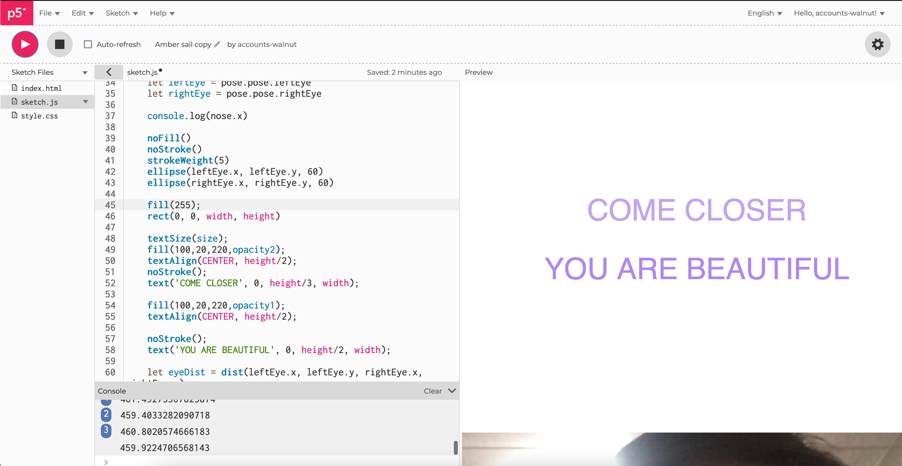

In this project, I want to create an interactive text, that trigger by people eyes. The concept is to use the distance between two eyes, as the eyes get closers the text fade in as another one fade out.
1. the first step was to set up face tracking, importing the code from ML5JS, and using the face mesh.
2. Once the face is tracked, adding shapes that track the features on the face.
3. Adding text after the feature on the face is tracked.
4. Once the text is in, adding the circles to track eyes.
5. Start adding codes to interact the text and the shapes
6. Adding the background
7. Update to the final texts.
8. Final Output